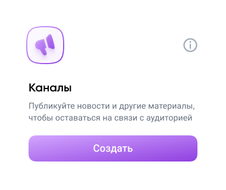
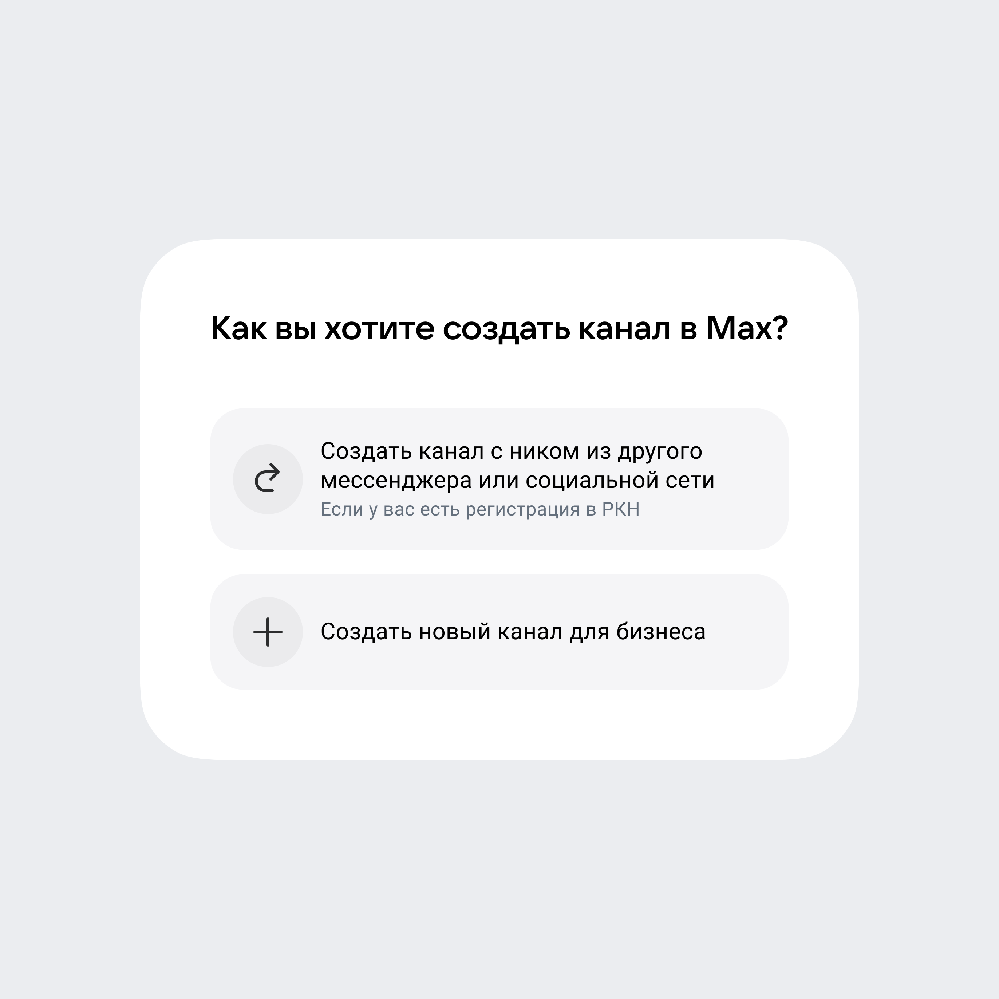
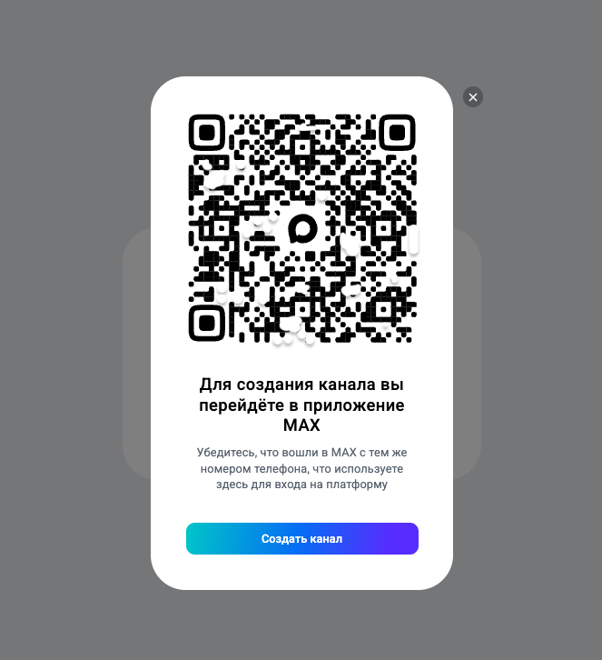
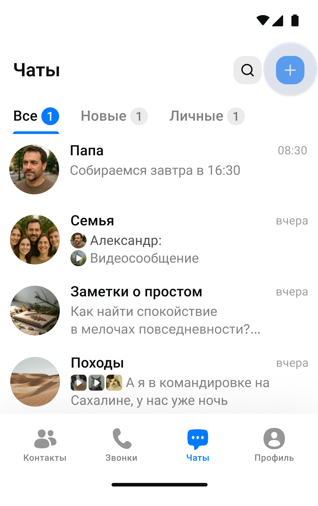
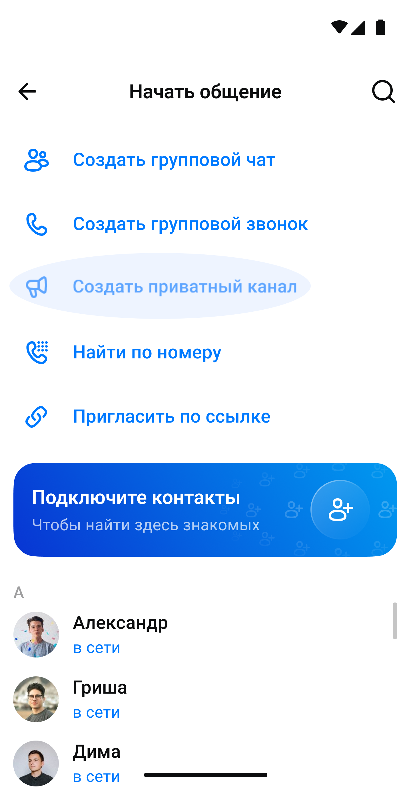
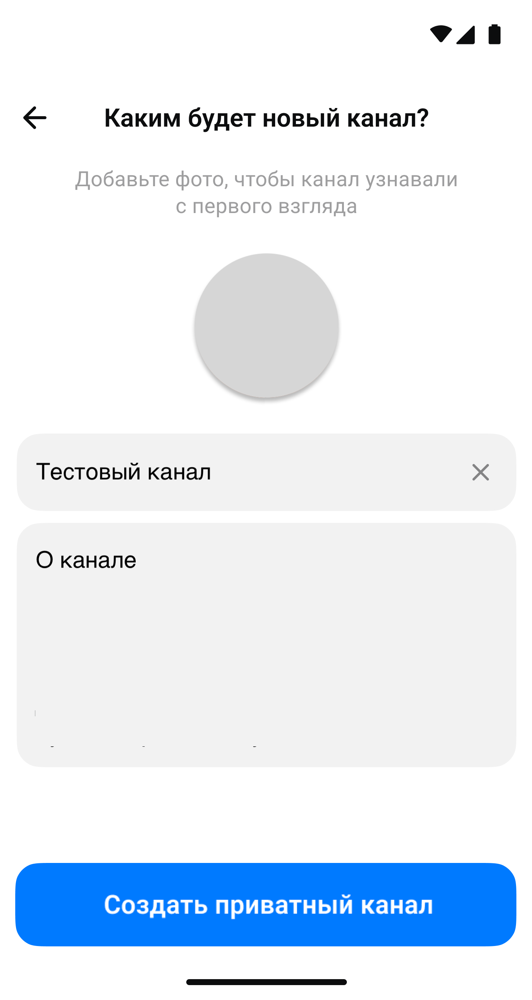
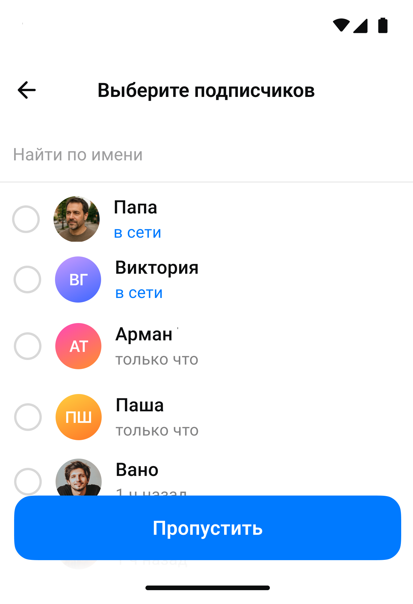
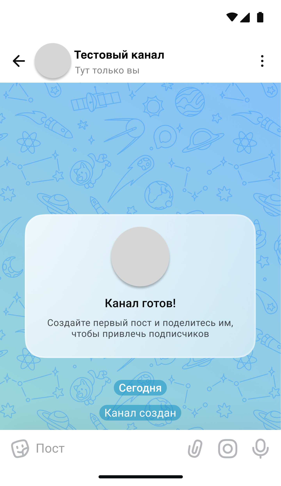

Создание каналов
Подключение к платформе MAX для партнёров и её сервисам — чат-ботам, мини-приложениям, каналам — доступно для юрлиц и ИП, которые являются резидентами РФ
В мессенджере МАХ есть два типа каналов: публичные и приватные. Изменить тип канала с публичного на приватный или наоборот пока нельзя
Публичные каналы
Публичные каналы можно найти в поиске по никнейму, ссылке, названию и описанию. Подписаться на канал может любой пользователь
С помощью публичных каналов ваша организация может напрямую взаимодействовать с аудиторией, например публиковать новости и анонсировать акции
Процесс создания публичных каналов и их количество зависит от присутствия вашей организации с меткой А+ на других платформах (ВКонтакте, Одноклассники, Дзен, Telegram)



На этой странице описано создание публичных каналов для юрлиц и ИП, которые являются резидентами РФ. Как добавить такие каналы, если у вас другая организационно-правовая форма и вы автор канала с А+, читайте в FAQ MAX
Если нет ресурсов с меткой А+ на других платформах
Вы можете создать канал через платформу MAX для партнёров. Название канала вы выбираете сами, а ник генерируется автоматически. Пока доступно создание только одного такого канала
Для удобства и безопасности мы разделили верификацию и повседневное использование канала между двумя платформами — MAX для партнёров и мессенджером MAX:
- На платформе MAX для партнёров вы верифицируете организацию и инициируете создание канала. Только подтверждённые организации могут создать канал через платформу
- Мессенджер MAX вы используете для ежедневной работы с каналом. Создание контента, публикация постов, управление каналом — всё это происходит непосредственно в интерфейсе мессенджера
Если есть ресурсы с меткой А+ на других платформах
Вы можете создать в MAX:
- Каналы с никами и названиями, как у ваших сообществ и каналов с меткой А+ на платформах ВКонтакте, Одноклассники, Дзен или в Telegram. Можно добавить столько каналов, сколько у вас есть ресурсов с меткой А+ на указанных платформах
- Канал с выбранным вами названием и автогенерируемым ником
Как создать канал с выбранным вами названием
Вы можете создать пока только один такой канал. Название вы задаёте сами, а ник генерируется автоматически по шаблону
idИНН_biz
Что потребуется
- Пройти регистрацию на платформе и верифицировать организацию. Подробнее — в разделе «Подключение к платформе»
- Профиль в MAX с номером телефона, который совпадает с тем, что вы использовали при регистрации на платформе
Этап 1. На платформе MAX для партнёров
- Откройте платформу MAX для партнёров
- Перейдите в раздел Каналы → Создать
- Выберите Создать новый канал для бизнеса
- Отсканируйте QR-код или нажмите кнопку — вы перейдёте в бота для создания каналов в MAX Каналы в MAX для бизнеса
Этап 2. В мессенджере MAX
- В боте Каналы в MAX для бизнеса нажмите Начать, затем выберите Создать канал
- Поделитесь номером телефона. Он должен совпадать с номером, который вы используете при входе на платформу
- Дождитесь обработки заявки — вам придёт уведомление
- Введите название канала
Запрещено использовать ненормативную лексику и контент 18+
- Получите название и ник. Ник генерируется автоматически по шаблону
idИНН_biz - Нажмите Создать канал. Если всё в порядке, в MAX будет создан ваш канал
Готово! Теперь вы можете добавить аватар и описание канала, назначить администратора для совместного ведения канала и опубликовать первый пост
Как создать канал с таким же названием, как у ресурса с меткой А+
Если у вас есть канал или сообщество с меткой А+ на другой платформе: ВКонтакте, Одноклассники, Дзен или Telegram — вы можете создать в MAX каналы с такими же названиями и никами через бота Каналы в МАХ. Можно добавить столько каналов, сколько у вас есть ресурсов с меткой А+ на указанных платформах
Ваш номер телефона в MAX должен совпадать с тем, что вы использовали для получения метки А+ в Роскомнадзоре
Этап 1. На платформе MAX для партнёров
- Откройте платформу MAX для партнёров
- Перейдите в раздел Каналы → Создать
- Выберите Создать канал с ником из другого мессенджера или социальной сети
- Отсканируйте QR-код или нажмите кнопку — вы перейдёте в бота для создания каналов в MAX
Этап 2. В мессенджере MAX
- В чат-боте Каналы в MAX: @channel_bot нажмите Начать → Создать канал
- Выберите платформу, где у вас есть метка А+. От этого зависят дальнейшие шаги
ВКонтакте, ОК или Дзен
- Поделитесь номером телефона из MAX — это нужно, чтобы мы убедились, что вы автор. Номер должен совпадать с тем, что вы использовали для получения метки А+
- Отправьте ссылку на ваш ресурс с меткой А+
- Для ВКонтакте: ссылку на сообщество ВКонтакте
- Для ОК: ссылку на группу в Одноклассниках
- Для Дзена: ссылку на канал
- Отправьте ссылку на регистрацию вашего ресурса в Роскомнадзоре в формате
https://www.gosuslugi.ru/snet/...илиhttps://knd.gov.ru/license?id=...
После проверки бот пришлёт вам соответствующее уведомление - Нажмите Создать канал. Если всё в порядке, MAX пришлёт уведомление с ником и названием канала:
- Для ВКонтакте ник канала — часть после домена
vk.com/ - Для ОК ник канала — в формате
group+ цифровой идентификатор - Для Дзена ник канала — часть после
https://dzen.ru/
- Для ВКонтакте ник канала — часть после домена
Telegram
- Отправьте ссылку на регистрацию вашего канала в Роскомнадзоре в формате
https://www.gosuslugi.ru/snet/...илиhttps://knd.gov.ru/license?id=... - Вам придёт уникальный хештег — добавьте его в описание вашего канала в Telegram. После создания канала хештег можно будет удалить
- В боте Каналы в МАХ нажмите Проверить. После проверки бот пришлёт вам соответствующее уведомление
- Нажмите Создать канал. Если всё в порядке, MAX пришлёт уведомление с ником и названием канала:
- Для Telegram ник канала — часть после
t.me/
- Для Telegram ник канала — часть после
Готово! Теперь вы можете добавить аватар и описание канала, назначить администратора для совместного ведения канала и опубликовать первый пост
Приватные каналы
Создание приватных каналов доступно пока только для пользователей из РФ — аккаунт в мессенджере МАХ должен быть зарегистрирован на российский номер телефона
У приватных каналов нет никнейма — ссылка-приглашение генерируется автоматически. Пользователи не могут найти канал в поиске, пока не подпишутся на него
Чтобы добавиться в канал, пользователь должен пройти по ссылке-приглашению и подписаться
Для дополнительной безопасности вы можете включить в приватных каналах опцию Заявка на вступление: по умолчанию она отключена. В этом случае пользователи смогут подписаться на канал только после согласования заявки администратором
Как это выглядит
- Пользователи переходят по ссылке-приглашению и подают заявку на вступление
- Администратор канала или его владелец рассматривает заявку и решает, одобрить её или отклонить
- Если заявка согласована, пользователь получит соответствующее уведомление в МАХ. Если администратор отклонил заявку, пользователь может подать её повторно
Вы можете использовать приватные каналы для коммуникаций внутри организации, например, для анонса новостей или оповещения сотрудников. Количество приватных каналов неограниченно — можно создать несколько, например, для разных отделов или филиалов
Также можно использовать приватные каналы для монетизации. Например, публиковать уникальный контент и выдавать к нему доступ только после оплаты или размещать рекламные посты за деньги
Как создать приватный канал
Для создания приватного канала подключение к платформе MAX для партнёров не нужно — достаточно быть пользователем мессенджера МАХ с аккаунтом, зарегистрированным на российский номер телефона
Рекомендуем использовать телефон организации или ответственного, кто будет управлять каналом и модерировать заявки на вступление
Чтобы создать:
- Откройте мессенджер и справа от заголовка Чаты нажмите плюс
- Выберите Создать приватный канал
- Укажите название, добавьте описание и аватар, затем нажмите Создать приватный канал
- Выберите подписчиков (опционально) и нажмите Добавить либо нажмите Пропустить, если хотите пригласить пользователей позже.
Готово! Приватный канал создан
Если вы хотите, чтобы администратор отслеживал, кто добавляется в канал, и мог одобрить или отклонить заявку на вступление, включите в настройках опцию Заявка на вступление и управляйте заявками





 Если у вас возникли вопросы, посмотрите раздел с ответами
Если у вас возникли вопросы, посмотрите раздел с ответами